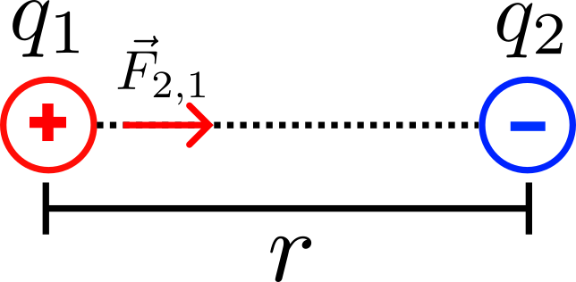
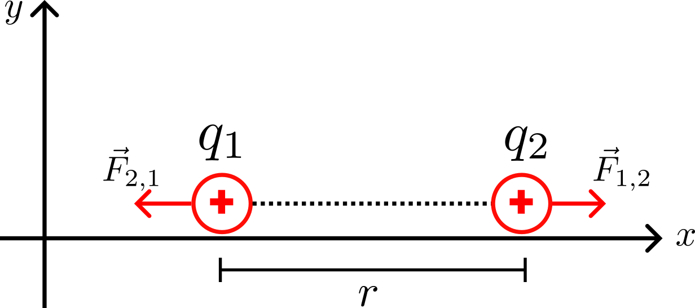
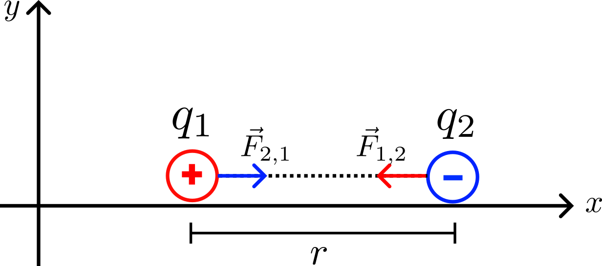

1.2 Ley de Coulomb#
La fuerza elétrica entre las cargas:
{kind=link}
Está dirigida a lo largo de la linea que los une.
Varía inversamente con el cuadrado de la distancia que separa las cargas
Es proporcional al producto de las mismas.
Es repulsiva si las cargas tienen el mismo signo y atractiva si las cargas tienen signos opuestos.
La magnitud (siempre positiva) de dicha fuerza:
(119)#\[F=\frac{k\,|q_1\,q_2|}{r^2} \quad (\text{N})\]
donde \(k\) es una constante positiva determinada experimentalmente conocida como constante de Coulomb cuyo valor numérico:
(117)#\[k=8,99\times 10^9\quad\left(\mathrm{\frac{Nm^2}{C^2}}\right)\]
asimismo esta se puede expresar en función de la permitividad del vacío:
(118)#\[ k = \frac{1}{4 \pi \varepsilon_0}\]
Donde \(\varepsilon_0 \approx 8.854 \times 10^{-12} \ \mathrm{C^2/(N \cdot m^2)}\) es la permitividad eléctrica del vacío.
Formulación vectorial ley de Coulomb#
(119)#\[\vec{F}=k\,\frac{|q_1\,q_2|}{r^2}\vec{e}_{\vec{r}}\]
Casos#
Caso Unidimensional
..- Repulsión
{kind=link}
.. - Atracción
{kind=link}
En el plano
{kind=link}
En el espacio
{kind=link}